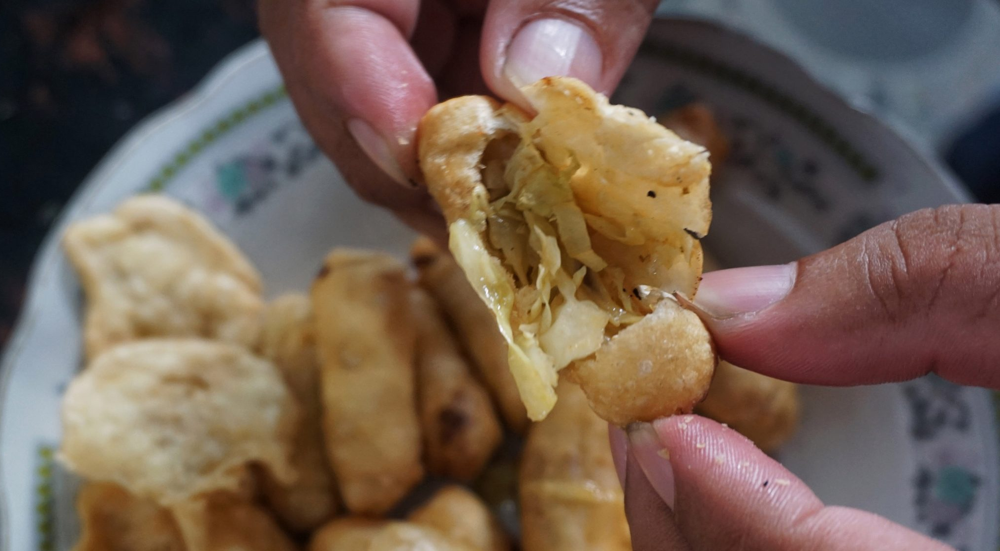

Sejarah

Secara historis dijelaskan bahwa eksistensi dari Kota Tegal tidak
lepas dari peran Ki Gede Sebayu. Bangsawan ini adalah saudara dari
Raden Benowo yang pergi kearah Barat dan sampai di tepian sungai
Gung. Melihat kesuburan tanahnya, Ki Gede Sebayu tergugah dan
berniat bersama-sama penduduk meningkatkan hasil pertanian dengan
memperluas lahan serta membuat saluran pengairan. Daerah yang
sebagian besar merupakan tanah lading tersebut kemudian dinamakan
Tegal.
Selain berhasil memajukan pertanian, dia juga merupakan ahli agama
yang telah membimbing warga masyarakat dalam menanamkan rasa
keimanan kepada Tuhan Yang Maha Esa. Atas jasanya tersebut, akhirnya
dia diangkat menjadi pemimpin dan panutan warga masyarakat. Kemudian
oleh Bupati Pemalang dikukuhkan menjadi sesepuh dengan pangkat Juru
Demung atau Demang.
Pengangkatan Ki Gede Sebayu menjadi Pemimpin Tegal dilaksanakan pada
perayaan tradisional setelah menikmati hasil panen padi dan hasil
pertanian lainnya.
Geografis
Kota Tegal merupakan salah satu wilayah di Propinsi Jawa Tengah yang
berada di ujung barat dan terletak di pantai utara pulau Jawa.
Secara astronomis terletak pada 109° 08' sampai 109° 10'
garis Bujur Timur dan 6° 50' sampai 6° 53' garis Lintang
Selatan, dan secara geografis terletak pada pertigaan jalur
Purwokerto - Jakarta dan Semarang - Jakarta. Wilayah Kota Tegal
berbatasan langsung dengan tiga kabupaten, yaitu sebelah Timur
Kabupaten Pemalang, sebelah Selatan Kabupaten Tegal dan sebelah
barat Kabupaten Brebes.
Di sebelah Utara Kota tegal berbatasan langsung dengan Laut Jawa.
Pada tahun 1987, Kota Tegal mengalami pemekaran wilayah yang berasal
dari Kabupaten Tegal, ditambah dengan wilayah Kabupaten Brebes, yang
dikenal dengan sebutan Bokong Semar
. Luas wilayah saat ini
adalah 39.68 km2, atau sekitar 0.11% dari luas Jawa
Tengah. Kota ini terbagi menjadi 4 Kecamatan dengan 27 Kelurahan,
dengan wilayah Kecamatan terluas Tegal Barat yaitu sebesar 15.13
km2 atau sekitar 38.13% luas wilayah Kota Tegal.
Destinasi
Ngomongin soal Tegal, tentu ingatan Anda mungkin akan langsung
tertuju pada warteg Warung Tegal
dan bahasa dialek
Ngapak
-nya yang unik. Namun, jika Anda menelusuri lebih jauh
kota pantura ini, Anda akan terkagum-kagum melihat keindahan objek
wisatanya yang eksotis dan menarik.
Tegal memang mempunyai destinasi wisata yang tak kalah keren dengan
tempat wisata di Semarang, Brebes, Pekalongan, Purwokerto, dan
daerah lain di sekitarnya. Sebut saja Guci dan Rita Park yang cukup
populer di Jateng. Soal harga tiket masuk tak usah kuatir, Anda
tinggal pilih mau objek wisata yang gratis, murah meriah, sampai
yang mahal tersedia di Kota ini.
1. Pemandian Air Panas Guci
Tempat wisata di Tegal yang pertama adalah wahana pemandian air
panas Guci. Tempat pemandian ini selalu ramai di akhir pekan atau
hari libur. Letaknya di Jl. Objek Wisata Guci, Sigedong, Bumijawa,
Tegal, Jawa Tengah.
Tempat ini cukup unik, karena suhu air berbeda beda, tergantung
dari tingkatannya, dimana ada 25 buah tingkatan. Adapun sumber
panasnya berasal dari Gunung Slamet. air
Jika anda mandi disini, penyakit kulit bisa sembuh karena air
mengandung belerang. Oh ya, bagi anda yang memiliki riwayat
penyakit jantung jangan lama-lama mandinya.
Lokasi : Kecamatan Bumijawa, Tegal, Jawa Tengah
2. Pantai Alam Indah

Objek wisata Pantai Alam Indah berada di Kota Tegal, Jawa Tengah,
tepatnya di Kelurahan Mintaragen, Kecamatan Tegal Timur. Dari
jalan Pantura hanya berjarak 500 meter. Meskipun belum ada jalur
angkutan kota yang menuju ke PAI, masyarakat dapat menjangkau
dengan transportasi apa pun, termasuk berjalan kaki. PAI merupakan
salah satu potensi yang turut menyumbangkan pendapatan asli daerah
(PAD) kepada Pemerintah Kota Tegal melalui pemungutan tiket masuk
dan retribusi parkir. Sebelumnya, PAI masih belum tertata.
Pertamanan dan fasilitas di dalamnya masih seadanya, padahal minat
masyarakat terhadap objek wisata itu cukup besar, terutama pada
saat hari Minggu dan peringatan hari besar nasional. Namun setelah
tahun 2004, pemerintah setempat, secara perlahan, mulai serius
mengelola dengan membenahi beberapa bagian penting antara lain
memperindah pertamanan, penyediaan lahan parkir yang lebih
representatif, pembangunan masjid, gardu pandang, dan dua buah
anjungan yang dapat digunakan untuk bercengkerama para pengunjung.
Lokasi : Mintaragen, Kec. Tegal Tim., Kota Tegal, Jawa
Tengah
3. Purwahamba Indah

Tempat wisata di Tegal selanjutnya andalan pantai Purwahamba
Indah. Pasir pantainya memang tidak putih seperti pasir di Bali,
tapi pemandangan pantai ini sangat indah. Lokasinya berada di Desa
Purwahamba, Kecamatan Suradadi ini, anda bisa menikmati banyak
fasilitas yang yang tersedia, seperti kolam renang, waterboom,
sepeda air, kereta mini, gazebo cafe, kebun binatang mini, arena
bermain anak dan masih banyak lagi. Dari terminal bus Kota Tegal,
anda hanya akan menempuh jarak sekitar 14 KM untuk mencapai pantai
ini.
Lokasi: Desa Purwahamba, Kecamatan Suradadi, Tegal, Jawa
Tengah
4. Waduk Cacaban

Waduk cacaban adalah tempat wisata di Tegal yang tidak boleh anda
lewatkan. Suasana yang damai dan asri serta panorama yang indah
akan memberikan kedamaian tersendiri bagi wisatawan. waduk ini
sendiri dibangun pada 1952 oleh Soekarno. Di waduk ini ada
berbagai macam wahana permainan seperti bumi perkemahan, tempat
bermain anak, panggung hiburan, warung apung, kapal wisata dil.
Sangat disayangkan sekali kalau anda ke Tegal di mengunjungi waduk
cacaban ini. Bagaimana? Anda tertarik? Lokasi: Cacaban, Kecamatan
Kedungbanteng, Kabupaten Tegal
Lokasi: Cacaban, Kecamatan Kedungbanteng, Tegal, Jawa
Tengah
Kuliner
Kota Tegal terkenal dengan julukannya sebagai Kota Warteg dan Kota
Bahari, jadi tidak heran bila Tegal dikatakan sebagai tempatnya
berburu wisata kuliner dari Jawa Tengah. Lokasinya yang strategis
masuk dalam jalur mudik Pantura menjadikan Tegal sebagai tempat
persinggahan untuk beristirahat dan berburu kuliner.
Yang menjadikannya istimewa, kuliner Tegal memiliki cita rasa yang
berbeda dari masakan Jawa pada umumnya. Berikut beberapa makanan
khas Tegal yang patut dicoba.
1. Tahu Aci
Tahu Aci merupakan makanan cemilan khas Tegal yang berbahan dasar,
Tahu, Aci (tepung kanji) dan diberi irisan daun kucai. Tahu Aci
sendiri telah menjadi cemilan spesial bagi masyarakat Tegal,
selain mempunyai rasa yang enak, Tahu Aci juga memiliki tekstur
yang unik dimana pada bagian luarnya terlihat Crspy sementara
dibagian dalamnya lembut dan juga kenyal. Saking larisnya cemilan
ini, tahu aci mulai dijajakan daerah-daerah lain dengan sebutan
bermacam-macam, salah satunya tahu kuping.
2. Soto Tegal
Mirip soto Pelakongan, soto Tegal juga memakai tauco. Berkuah
bening super gurih, dengan isian suun dan tauge. Enak dimakan
hangat dengan nasi atau lontong. Karena lokasinya berdekatan soto
Pekalongan dan Tegal memang mirip. Keduanya memakai campuran tauco
yang gurih beraroma tajam. Semakin enak diaduk dengan kaldunya
yang bening. Soto tegal bisa dibuat dari ayam kampung atau daging
sapi berlemak. Isiannya suun dan tauge. Pemakaian bumbu tauco
merupakan adaptasi dari kuliner China. Hasl fermentasi kedelai ini
rasanya gurih kuat. Kalau bosan dengan ayam, kamu bisa meracik
soto Tegal dengan daging sapi. Gunakan tauco berkualitas agar
rasanya gurih enak.
3. Kupat Glabed
Kalau kamu sedang berkunjung di Kota/Kabupaten Tegal, cicipi
makanan khas yang satu ini. Nikmati rasanya yang gurih dan nikmat,
selain mengenyangkan. Kupat Glabed adalah makanan dengan bahas
dasar ketupat yang dipotong-potong. Dengan kuah yang mengental dan
bewarna kuning. Glabed adalah sebutan warga Tegal untuk tekstur
kuah yang kental dan lengket. Kuah kupat ini berwarna kuning
seperti opor, namun teksturnya lebih kental. Selain dari segi
tekstur kuah juga ada taburan kerupuk kuning di atasnya. Dan yang
bikin seger makanan ini yaitu berasal dari kuah sambal yang begitu
khas. Orang awam mungkin menjadi tidak tertarik saat melihat
makanan ini. Karena kuahnya yang sangat mengental. Namun kalau
sudah mencoba, kamu bsia ketagihan karena kuahnya yang mengental
tersebut terasa gurih sekali.
4. Poles

Poles, adalah kuliner Tegal yang hadir terlebih dahulu sebelum
olos. Jika olos itu bentuknya bulat, berbeda dengan poles. Poles
ini bentuknya lonjong dan memiliki semacam layer-layer dalam
kulitnya, seperti molen. Isiannya lebih mirip risoles, ada sayuran
seperti wortel di dalamnya. Namun ada tambahan tumbukan cabai
rawit sehingga rasanya sedikit lebih pedas.
Kemudian isian poles tadi dimasukan ke dalam kulit dari tepung
terigu yang sudah digiling terlebih dahulu kemudian di goreng
hingga kecoklatan. Lalu tiriskan dan siap santap. Jajanan seperti
ini memang cocoknya dimakan selagi hangat. Karena sensasi pedasnya
menjadi lebih terasa.